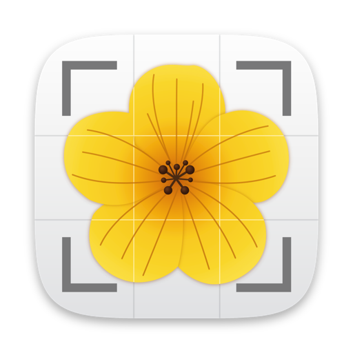

Vos photos restent dans le Finder.
Aster les développe.
Une photothèque et un éditeur RAW pour Mac, pour les photographes qui veulent leurs images dans des dossiers ordinaires et leurs retouches juste à côté. Importer, trier, développer, retoucher localement, titrer et retrouver — sans compte, sans nuage, sans abonnement.
Bientôt sur le Mac App StoreUn achat unique. Sans compte, sans abonnement.
Vos dossiers, pas un catalogue
Aster lit les dossiers que vous avez déjà, rangés comme vous l’entendez. Retouches, notes, titres et mots-clés sont écrits dans des fichiers XMP à côté de chaque photo, lisibles par d’autres logiciels. Les originaux ne sont jamais modifiés. Déplacez un dossier dans le Finder : rien ne se perd.
Un rendu qui ne bouge pas
Chaque photo garde le rendu RAW avec lequel elle a été retouchée. Quand le traitement d’Aster progresse, les nouvelles photos en profitent, et celles que vous avez terminées restent exactement comme vous les avez laissées.
La retouche locale, sans aller-retour
Masques au pinceau et par formes, plages de luminance et de couleur, masques automatiques pour les personnes, la peau, le sujet et le ciel, et un Correcteur pour les poussières et les détails gênants. Tout se calcule sur votre Mac.
Pour qui
Les photographes qui travaillent en RAW et veulent garder la main sur leurs fichiers : voyage et paysage, reportage, portrait, ou simplement des archives de famille bien tenues. Si vous avez déjà dû exporter vos photos d’un catalogue pour les récupérer, Aster est fait pour vous.